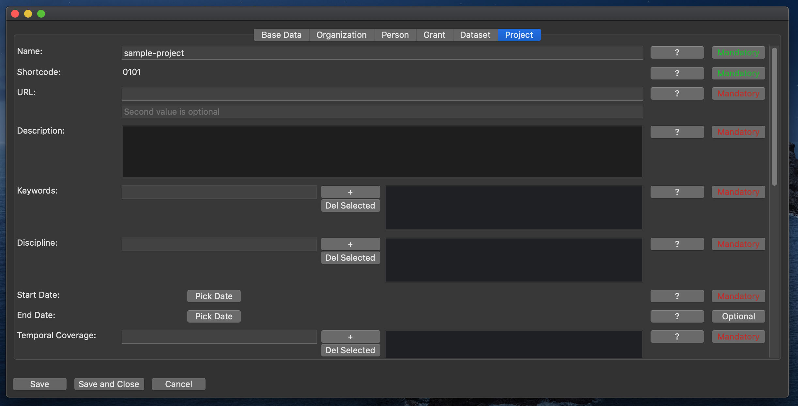

Project Tab

This class represents the project itself.
Name
The official project name.
(Mandatory.)
Shortcode
The unique identifier assigned to the project by the DaSCH Client Services.
This needs to be entered upon project creation and can not be changed later on. The property is read-only.
URL
The project website.
This should always be the DSP ARK URL (which will be provided by the DaSCH Client Services).
Optionally, a second URL can be entered, e.g. pointing to a project-specific website.
(Mandatory. Second value optional.)
Description
Description of the project.
This should be the description text rather than a URL.
(Mandatory.)
Keywords
Keywords/Tags describing the project.
(Mandatory. Can have multiple values.)
Discipline
The scholarly discipline of the project.
This should either be a link to the UNESCO nomenclature for fields of science and technology
or a term from the list provided by the SNSF.
(Mandatory. Can have multiple values.)
Start Date
Start date of the project.
Use the date picker to select a date.
(Mandatory.)
End Date
End date of the project.
Use the date picker to select a date.
(Optional.)
Temporal Coverage
The temporal coverage of the project.
Should be a link to a term in Periodo or Chronontology.
(Mandatory. Can have multiple values.)
Spatial Coverage
The spatial coverage of the project.
Should be a link to a term in Geonames or Pleiades.
(Mandatory. Can have multiple values.)
Funder
The funder of the project.
Select a person or organization from the drop-down.
(Mandatory. Can have multiple values.)
Grant
The grant by which the project is financed.
Select a grant from the drop-down.
(Optional. Can have multiple values.)
Alternate Name
Alternative name of the project, e.g. if the project is typically referred to by a short name.
(Optional. Can have multiple values.)
Data Management Plan
Data management plan of the project.
Use the checkbox to indicate if there is a data management plan at all.
Add a link to the data management plan, if available online.
(Optional.)
Publications
Publications published during the lifetime of the project.
(Optional.)
Contact Point
Designated contact point for the project.
Use the drop-down to select a person or organization.
(Optional.)